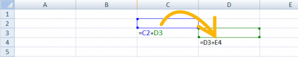
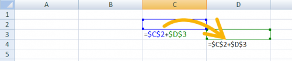

Информатика ОГЭ:
Разбор задания №14
Типы ссылок в ячейках
Формулы, записанные в ячейках таблицы, бывают относительными, абсолютными и смешанными.
- Имена ячеек в относительной формуле автоматически меняются при переносе или копировании ячейки с формулой в другое место таблицы: 
- Имена ячеек в абсолютной формуле не меняются при переносе или копировании ячейки с формулой в другое место таблицы.
- Для указания того, что не меняется столбец, ставится знак $ перед буквой столбца. Для указания того, что не меняется строка, ставится знак $ перед номером строки:
- Для указания того, что не меняется столбец, ставится знак $ перед буквой столбца. Для указания того, что не меняется строка, ставится знак $ перед номером строки: 
- В смешанных формулах меняется только относительная часть:

Стандартные функции Excel
В ОГЭ встречаются в формулах следующие стандартные функции. Ниже рассмотрен их смысл. Наводите курсор на пример для просмотра ответа.
| русский | англ. | действие | синтаксис |
| СУММ | SUM | Суммирует все числа в интервале ячеек | СУММ(число1;число2) |
| Пример: | |||
| =СУММ(3; 2) =СУММ(A2:A4) |
|||
| СЧЁТ | COUNT | Подсчитывает количество всех непустых значений указанных ячеек | СЧЁТ(значение1, [значение2],…) |
| Пример: | |||
| =СЧЁТ(A5:A8) | |||
| СРЗНАЧ | AVERAGE | Возвращает среднее значение всех непустых значений указанных ячеек | СРЕДНЕЕ(число1, [число2],…) |
| Пример: | |||
| =СРЗНАЧ(A2:A6) | |||
| МАКС | MAX | Возвращает наибольшее значение из набора значений | МАКС(число1;число2; …) |
| Пример: | |||
| =МАКС(A2:A6) | |||
| МИН | MIN | Возвращает наименьшее значение из набора значений | МИН(число1;число2; …) |
| Пример: | |||
| =МИН(A2:A6) | |||
| ЕСЛИ | IF | Проверка условия. Функция с тремя аргументами: первый аргумент — логическое выражение; если значение первого аргумента — истина, то результатом выполнения функции является второй аргумент. Если ложно — третий аргумент. | ЕСЛИ(лог_выражение; значение_если_истина; значение_если_ложь) |
| Пример: | |||
| =ЕСЛИ(A2>B2;"Превышение";"ОК") | |||
| СЧЁТЕСЛИ | COUNTIF | Количество непустых ячеек в указанном диапазоне, удовлетворяющих заданному условию. | СЧЁТЕСЛИ(диапазон, критерий) |
| Пример: | |||
| =СЧЁТЕСЛИ(A2:A5;"яблоки") | |||
| СУММЕСЛИ | SUMIF | Сумма непустых ячеек в указанном диапазоне, удовлетворяющих заданному условию. | СУММЕСЛИ (диапазон, критерий, [диапазон_суммирования]) |
| Пример: | |||
| =СУММЕСЛИ(B2:B25;">5") | |||
В качестве параметра функции везде указывается диапазон ячеек: МИН(А2:А240)
- следует иметь в виду, что при использовании функции СРЗНАЧ не учитываются пустые ячейки и текстовые ячейки; например, после ввода формулы в C2 появится значение 2 (не учитывается пустая А2):
- Диаграммы используются для наглядного представления табличных данных.
- Разные типы диаграмм используются в зависимости от необходимого эффекта визуализации.
- Так, круговая и кольцевая диаграммы отображают соотношение находящихся в выбранном диапазоне ячеек данных к их общей сумме. Иными словами, эти типы служат для представления доли отдельных составляющих в общей сумме.
- Соответствие секторов круговой диаграммы (если она намеренно НЕ перевернута) начинается с «севера»: верхний сектор соответствует первой ячейке диапазона.
- Типы диаграмм Линейчатая и Гистограмма (на левом рис.), а также График и Точечная (на рис. справа) отображают абсолютные значения в выбранном диапазоне ячеек.

Построение диаграмм


Первая задача:
В электронную таблицу занесли данные о тестировании учеников по выбранным ими предметам.
| A | B | C | D | |
| 1 | Округ | Фамилия | Предмет | Баллы |
| 2 | С | Ученик 1 | Физика | 240 |
| 3 | В | Ученик 2 | Физкультура | 782 |
| 4 | Ю | Ученик 3 | Биология | 361 |
| 5 | СВ | Ученик 4 | Обществознание | 377 |
В столбце A записан код округа, в котором учится ученик;
в столбце B – код фамилии ученика;
в столбце C – выбранный учеником предмет;
в столбце D – тестовый балл.
Всего в электронную таблицу были занесены данные по 1000 учеников.
Откройте файл с данной электронной таблицей (расположение файла Вам сообщат организаторы экзамена). На основании данных, содержащихся в этой таблице, выполните задания.
Скачать task-1.xls- Сколько учеников, которые проходили тестирование по информатике, набрали более 600 баллов? Ответ запишите в ячейку H2 таблицы.
- Каков средний тестовый балл учеников, которые проходили тестирование по информатике? Ответ запишите в ячейку H3 таблицы с точностью не менее двух знаков после запятой.
- Постройте круговую диаграмму, отображающую соотношение числа участников тестирования из округов с кодами «В», «Зел» и «З». Левый верхний угол диаграммы разместите вблизи ячейки G6. В поле диаграммы должны присутствовать легенда (обозначение соответствия данных определённому сектору диаграммы) и числовые значения данных, по которым построена диаграмма.
Полученную таблицу необходимо сохранить под именем, указанным организаторами экзамена.
Решение:
- Поскольку спрашивается об учениках, которые проходили тестирование по информатике и набрали более 600 баллов, то здесь необходимо учесть одновременно два условия. Поэтому будем использовать функцию ЕСЛИ с логическим оператором И (одновременное выполнение нескольких условий). В ячейку E2 запишем формулу:
- Теперь эту формулу необходимо скопировать во все ячейки столбца
E. Для этого поместите курсор в правый нижний угол ячейкиЕ2, и, когда курсор мыши приобретет вид крестика дважды щелкните левой кнопкой мыши. Формула должна при этом скопироваться во все нижние ячейки столбца. - Результирующая формула по заданию должна размещаться в ячейке
H2. Установите курсор в ячейку. Для выполнения задания нам достаточно посчитать, сколько единиц в ячейках столбцаE. Для этого мы можем суммировать их. Введите формулу:
Ответ: 32